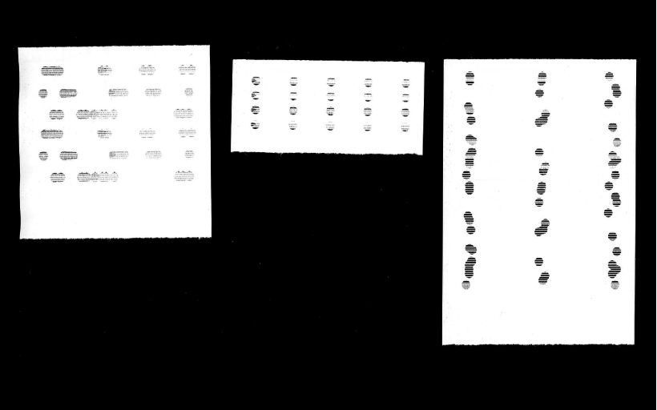

Giorgia Langianese
Conscious Cloth Cipher
The "Conscious Cloth Cipher", or CCC, is a tool that redefines the online shopping experience, bringing to light the environmental impact of every clothing purchase.
Using Arduino and a Mini Thermal Receipt Printer, the tool translates environmental data
(related to each suit) into a unique receipt for each transaction.
Through an intricate pattern of random dots, lengths and distances, the CCC visualizes the environmental profile of the selected dress, allowing the customer to
immediately perceive the impact of their choices.
The pattern variables are assigned according
to some criteria: the number of columns represents the type of the cloth,
the rows indicate the quality of the material, the position on the X axis reflects the energy consumption in the production, while the one on the Y axis shows
the place of production and the distance covered by the final package.
With a look at their receipt, consumers can assess the sustainability of their purchases, making
the concept of environmental responsibility tangible. The CCC aims to
raise awareness and guide towards more informed choices, addressing the environmental impact
of the clothing industry in an innovative and engaging way.
THE TOOL

OVERVIEW
VIDEOs
Promotional Video
Coding Arduino Thermal Printer
PRINTING
Paragrafo
Arduino Thermal Printer printing a receipt
Printed Receipt